IAR
IAR软件界面介绍
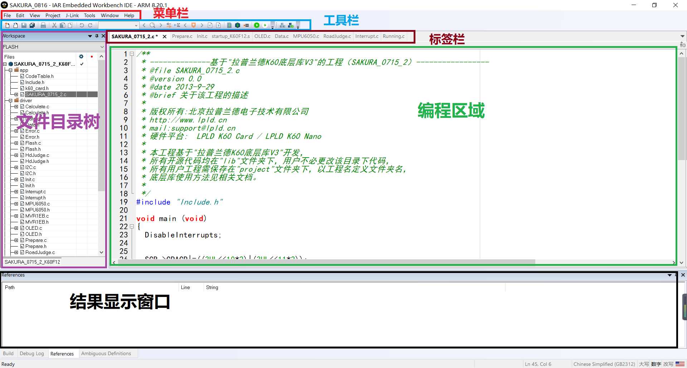
- 一个标准的IDE界面
- 菜单栏：涵盖几乎所有用户需要的功能
- 工具栏：放置一些常用的功能，便于调用
- 标签栏：显示用户打开的文件，方便切换
- 文件目录树：显示用户文件目录树形结构，方便查找切换
- 编程区域：占据了大部分空间，是我们写代码的地方
- 结果显示窗口：相当于控制台，输出文件编译信息，如错误，警告
如何显示工具栏
- 可能有些同学没有图中的工具栏区域
勾选
Windows->Toolbar->Main即可显示工具栏
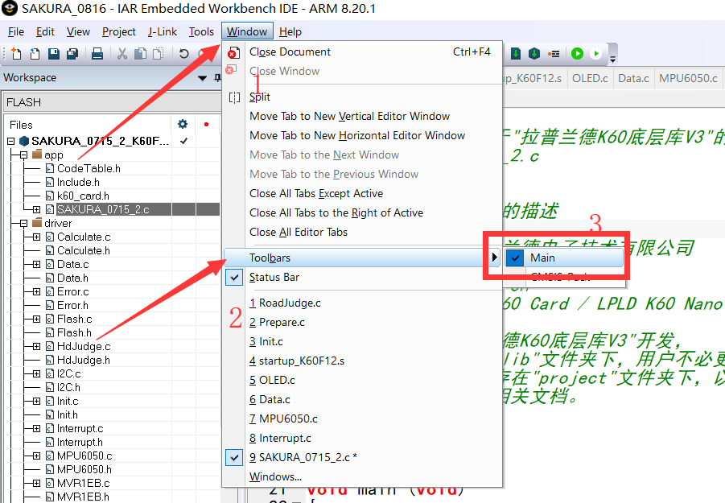
更改字体
- 默认的界面字体太小而且颜色单一，不利于阅读，和区分不同类型的代码，如关键字，注释等等
- 通过
按住Ctrl+滑动滚轮的方式可以调节当前文件的字体 - 通过设置选项个人化配置：
Tools->Options->Editor->Colors and Fonts
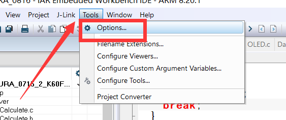
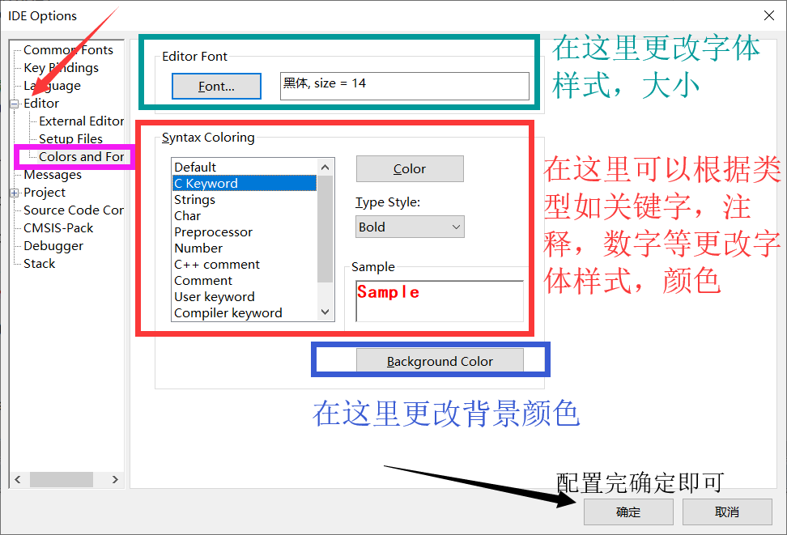
常用操作
新建并添加源文件
创建源文件
- 点击工具栏的新建文件选项
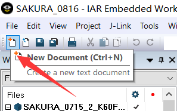
- 点击
File->New File
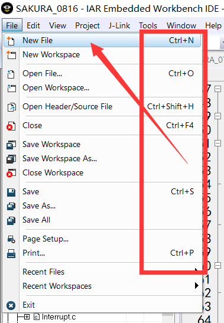
- 在这里我们可以看到右侧有快捷键提示，所以我们也可以使用
Ctrl+n来创建一个未命名的空文件，创建后，会出现一个名为untitled的空白文件
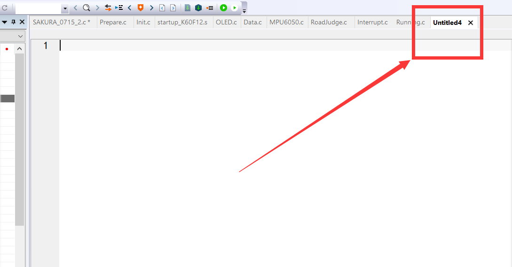
- 我们鼠标右键单击标签栏中的空白文件名称，选择
Save Untitled保存该文件，当然，你可可以直接使用Ctrl+s进行保存
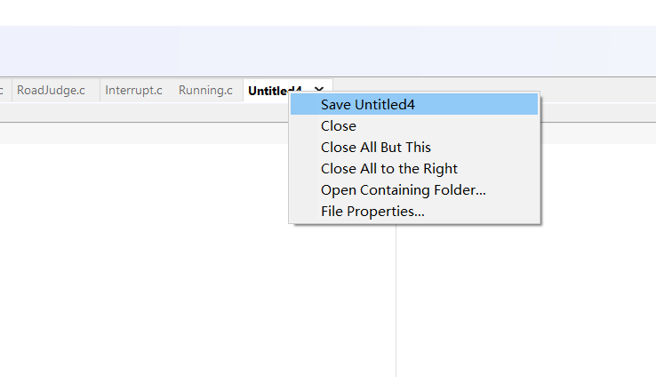
- 一般我们保存在当前工程下的
app目录下，如我当前的工程根目录是LPLD_OSKinetis_V3/project/gsproject/，那么我保存在LPLD_OSKinetis_V3/project/gsproject/app下，并且为这个文件起一个有意义的名字，如果是程序文件，则后缀名是.c，如果是头文件，后缀名是.h，文件名字中，以及你的工程路径中都尽量不要包含中文，这和编码解码有关，可能导致无法预知的错误
文件名不要使用数字开头或者包含特殊符号，尽量以字母开头，使用字母，下划线，数字的组合，如my_test1.c
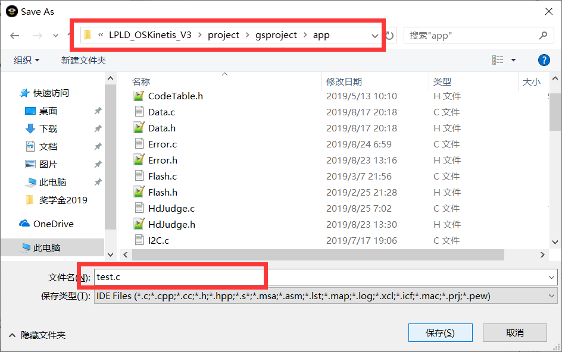
添加源文件
尽量将自己写的文件新建一个
Group进行存放，以免和底层别人写的库函数混淆创建
Group：右键单击文件目录树最顶层->Add->Add Group...，之后输入你的组名字即可创建（不要有中文）
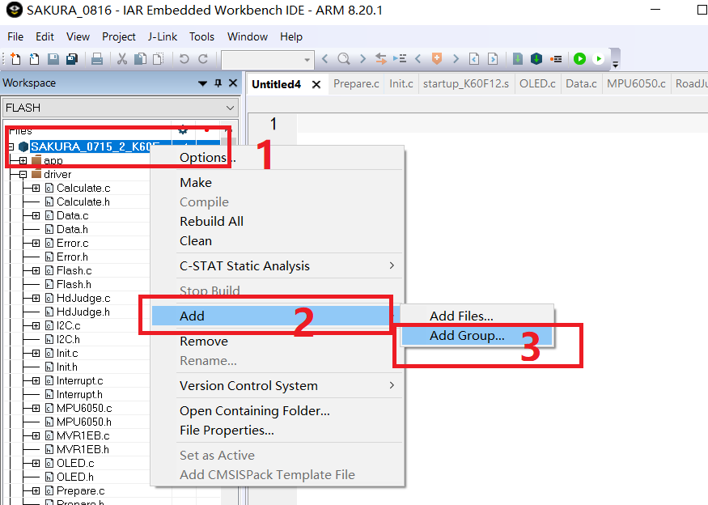添加源文件：
右键单击组->Add->Add Files...，去刚才保存文件的目录下选择文件保存即可
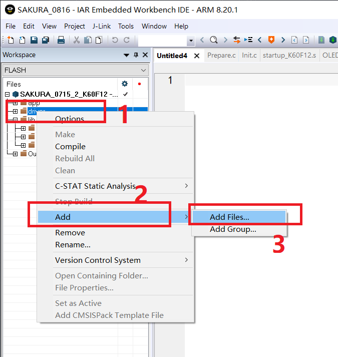
管理文件
多文件
- 在智能车竞赛的开发中会建立函数，变量，建议将共同实现某一功能的程序放置在一个文件，而其他功能的程序根据所达成的功能分别创建不同的文件存放，方便查询，修改
如建立名为
Motor.c的文件存放电机驱动程序，Motor.h的文件声明全局变量，函数
头文件管理
在开发中会建立许多功能不同的程序文件，而他们之间往往需要引用到同一个头文件，假设有十个文件都需要引用
Camera.h，Motor.h，Oled.h等等，那么你就需要在这十个文件的开头都写上1
2
3
4
5
...
...不免有些重复，所以我们可以建立一个名为
Include.h的头文件（名字可以任取，起这个是为了见名知意），而将需要多次引用的头文件写在这个文件里，其他文件只需要1
就可以导入这个文件中所有声明过的文件
头文件的一些说明
- 防止重复编译
大家应该在程序头文件中经常看到下面的代码
1
2
3
4
5
6
... //全局变量，函数声明，结构体定义等等
那么，他有什么作用呢？
直观可以看出，
ifndef是if not define的缩写，前面有#是C语言中预编译指令的写法，也就是如果_SOME_TEXT_H没有被定义，则定义_SOME_TEXT_H，并执行下面的代码，直到#endif
我们设想一下，当多个文件#include同一个头文件的时候，没有上面的代码，那么每导入一次，这个头文件就会被执行（包含）一次，多次执行（包含后）就会造成重定义（Duplicate Definition）的问题而导致程序出错
而如果加上这段代码，第一次执行时，条件为真（True），执行下面的代码，而后来条件都为假（False），不再执行，就避免了上述问题说明
这里的
_SOME_TEXT_H可以任取，只要不重复，唯一标识头文件即可，一般取头文件名字大写，并以下划线分隔
还可以使用下面的这段代码替换，但由于有的编译器不支持，所以一般还是写成上面的那种格式，1
- extern
- 在引用或声明全局变量时，需要用
extern关键字修饰 - 它的功能是说明这里并不是在定义一个变量，而是声明其他地方的变量
- 函数声明不需要
extern修饰，因为函数本身不加修饰的话就是extern extern声明全局变量时不可以复制，这个问题经常在从.c文件复制变量到.h文件声明时出现（复制过去忘记删除初始化值），导致程序出错
分组管理
刚才已经讲过了如何创建一个组，其实对于我们文件的管理也是基于组来管理的，这里推荐几种方式
- 即创立两个组，一个组用来放入
.c后缀的程序文件，另一个组用来放入.h后缀的头文件，将二者分开管理，如经典Ruler程序，Header放头文件，Source放程序文件
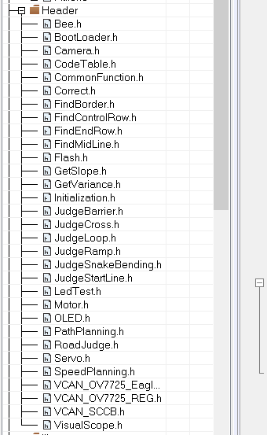 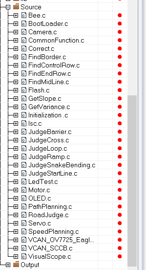- 只创建一个组，将自己的头文件和程序文件都放到里面，这样的优点是同名的
.c和.h文件在一起，而往往更改一个程序文件的时候同时需要更改同名的头文件，这样可以方便找到，而不用来回滑动滚轮，如我的程序
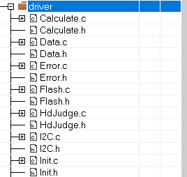- 你还可以根据文件功能进行分组，如底层的文件（超声波，激光，OLED，摄像头等）分为一组，跑车算法文件分为一组，这里只是介绍几种，随个人喜好你可以任意配置
分屏
- 在
IAR中代码编辑区域有一条不太明显的竖线，它存在的作用可能就是提醒iar具有分屏功能 - 具体操作：鼠标左键按住标签栏中的文件向下拖动至代码编辑区域松开即可实现分屏，
iar可以支持多个分屏
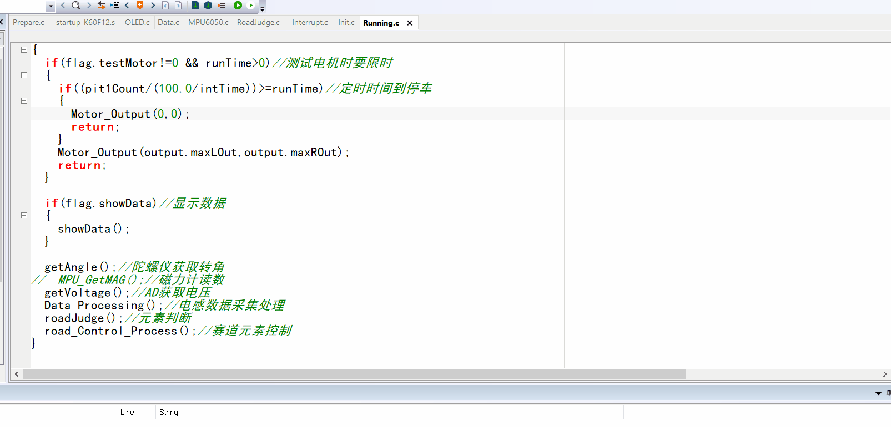
Livewatch功能
注意：这个功能只有在调试模式才会找到，如下图，编辑模式和调试模式下的
View菜单栏位置：
View->Live Watch
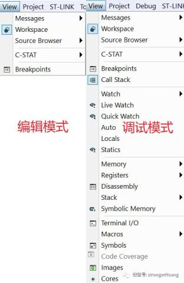功能：在里面输入变量名就可以实时查看变量的数值变化（非常非常常用的重要功能，如查看数值变化，断点调试等）
修改
Live Watch刷新速度：Tools->Options->Debugger->Live Watch
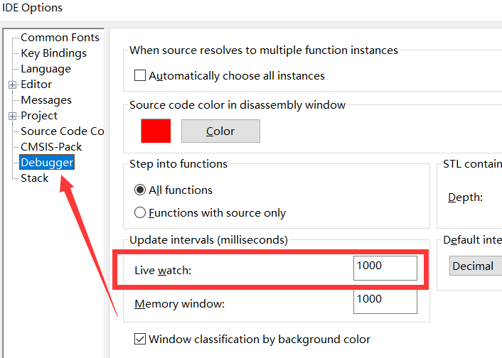默认是1000ms刷新一次，根据实际需要可以调节
断点调试
- 当程序不能按照我们的预期得到结果时，我们要使用Debug功能，设置断点
- 在指定位置设置断点，程序执行到这里以后，会停止向下执行，而保存当前的数据，我们通过多处设置断点，一步步查看数据值，即可一步步缩小程序的错误排查范围，并最终找到问题所在
- 案例：求平均值(我在VS2017中进行演示，用它的Debug功能，这和Live Watch原理是差不多的）
1
2
3
4
5
6
7
8
9
10
11
12
13
14
15
16
17
18
19
20
//AD模块采集到的值
unsigned short ad_value[5] = { 17878, 15267, 15667, 17621, 22132 };
int aver(void)
{
static unsigned short sum = 0;
for (int i = 0; i < 5; i++)
{
sum += ad_value[i];
}
return sum / 5;
}
int main(void)
{
printf("结果是：%d\n", aver());
system("pause");
}
- 执行后控制台输出结果
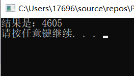
- 显然不是我们想要的正确结果，我们观察程序执行的流程，在循环语句处设置断点，如下图
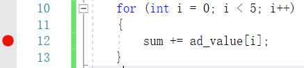
- 然后debug，逐步执行，查看结果
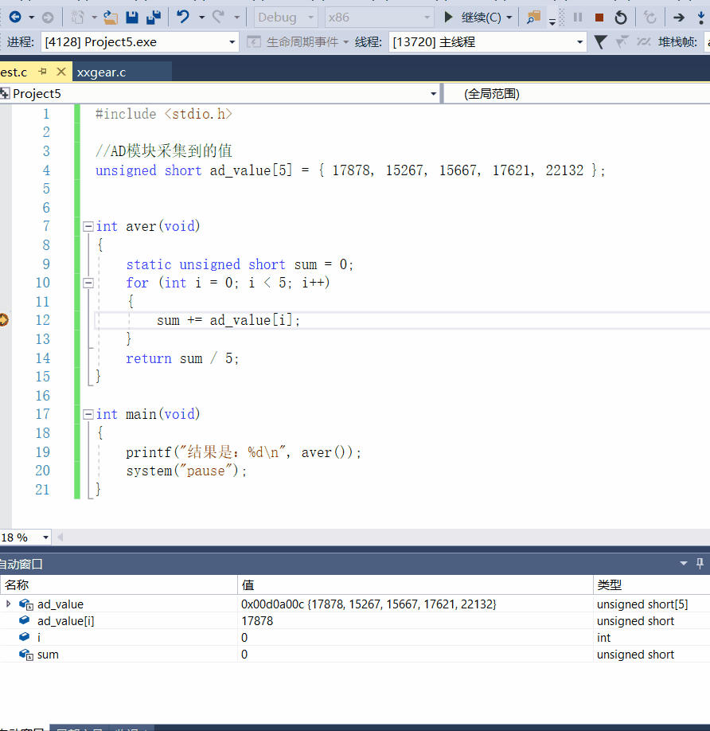
通过Debug我们发现，程序在累加的过程中和突然减小，那么显然这是由于相加后数据大于65535溢出造成的，我们可以通过更换更大的数据类型或者改用其他算法来规避这个问题
实际问题会复杂一些，这里只是抛砖引玉
常用快捷键
| 快捷键 | 功能 |
|---|---|
Ctrl+S |
保存文件，建议没事就Ctrl+S一下 |
Tab |
向右缩进（具体缩进多少可在Tools->Options->Editor->Indent Size更改） |
Shift+Tab |
向左缩进，和Tab一样可以选中多行文本执行 |
Ctrl+T |
将选中的文本自动排版 |
Ctrl+K |
注释选中文本（未选中文本注释当前行） |
Ctrl+Shift+K |
取消注释选中的文本（未选中文本取消注释当前行），注意：当选中的文本中有一行没有被注释时，命令不会执行 |
Ctrl+Tab |
返回上一个界面 |
Ctrl+F |
查找文本 |
Ctrl+H |
查找文本并支持替换文本 |
Ctrl+B |
括号匹配，会将同一个()或者[]或者{}的内容选中，再次执行此命令会继续扩大范围 |